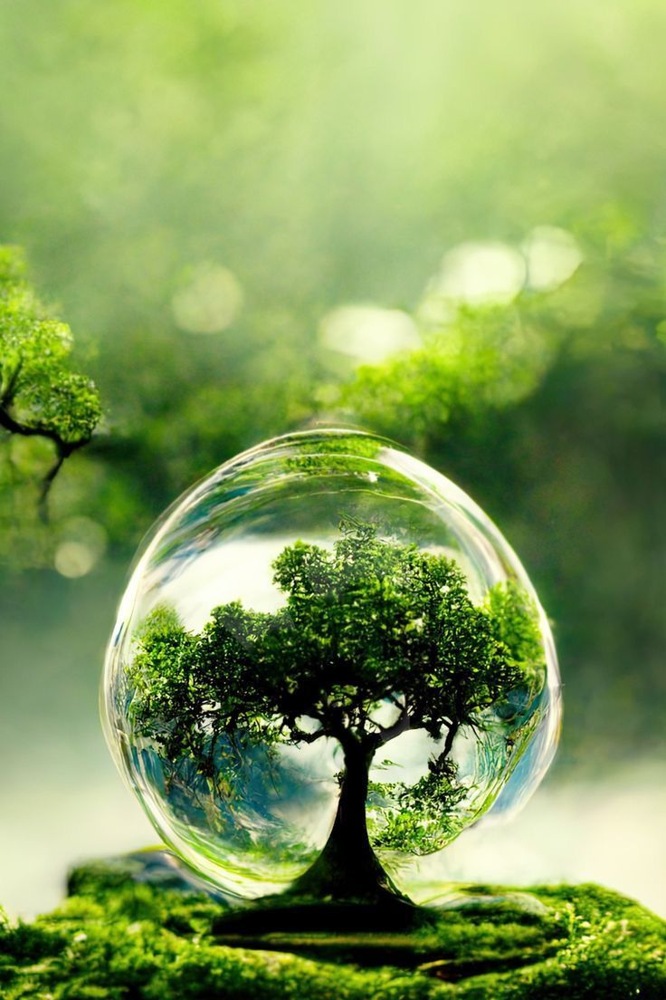

¡Conviértete en un agente de cambio! En nuestra institución, creemos que el cuidado del medio ambiente comienza con pequeñas acciones, como el reciclaje del papel. En esta página te enseñaremos cómo hacer papel reciclado de manera artesanal, cómo puedes participar en el programa de reciclaje y a dónde puedes llevar el papel que ya no usas.

¿Cómo Hacer Papel Reciclado Paso a Paso?
Descubre el proceso para fabricar tu propio papel en casa o en el aula, reutilizando materiales que normalmente desecharías. Es una manera divertida y ecológica de darles una segunda vida a los residuos de papel.
Estrategias de Reciclaje en la Institución
En la institución Byron Gaviria hemos implementado puntos de recolección de papel en cada aula y pasillo. Conoce cómo funciona nuestro sistema de reciclaje y cómo puedes ser parte de esta iniciativa que beneficia al medio ambiente y a nuestra comunidad.
¿A Dónde Llevamos el Papel Reciclado?
No solo reciclamos en la institución, sino que también colaboramos con centros de acopio locales que aseguran que el papel recolectado sea procesado de forma correcta. Aquí encontrarás una lista de los lugares a los que puedes llevar el papel para su reciclaje.